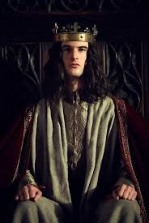

蘭開斯特王朝的最後一位英格蘭國王（1422年—1461年；1470年—1471年）。由於他的軟弱，英格蘭在亨利五世時代取得的豐碩戰果喪失殆盡，且陷入血腥的玫瑰戰爭之中。
亨利六世是英格蘭國王亨利五世和王后瓦盧瓦的凱薩琳唯一的兒子，生於伯克郡溫莎。當他的父王去世時，他出生後九個月，即被宣布為英格蘭國王。不久他的外祖父法國國王查理六世也去世了，根據亨利五世與查理六世簽訂的特魯瓦條約，英國人幾乎是單方面的宣布他也成為法國國王（法國人大多不承認特魯瓦條約有關兩國王位繼承的條款）。他的兩位叔父分別在英國和法國攝政：格洛斯特公爵漢弗萊在英國；貝德福公爵約翰在法國。前者死於1435年，後者一直任攝政至1437年。
亨利六世對政治不怎麼感興趣，但他卻為英格蘭的教育事業作出了很大貢獻。1440年，亨利六世創建了伊頓公學和劍橋大學國王學院。
亨利六世從他的父親那裡繼承了百年戰爭這筆不妙的遺產。當時戰況正發生變化：聖女貞德於1429年解除奧爾良之圍後，勝利的天平逐漸倒向法國一邊。英軍強有力的指揮官貝德福公爵約翰去世後，形勢對英國更為不利。亨利六世逐漸引起一些人的不滿。
從1453年開始，亨利六世的精神病間歇發作。約克公爵理查抓住時機發動叛亂，企圖成為亨利六世的攝政並取代亨利六世的兒子的繼承人地位。蘭開斯特王朝家族對此不能容忍，依靠西北部大封建主的支持，廢除攝政，雙方的長期混戰從此開始。因為約克公爵理查要求王位繼承權（理查的母親安妮·莫蒂默是亨利四世的二伯父安特衛普的萊奧內爾的後裔，舅父埃德蒙則是理查二世的王儲，若非亨利四世奪取了理查二世的王位，王位本應由埃德蒙繼承，如今埃德蒙已死，應輪到理查繼位），展開了英國貴族內戰（玫瑰戰爭）。亨利六世在1460年的南安普敦戰役中被俘，但同年在另一戰役中擊敗約克公爵理查（理查陣亡）。1461年，亨利六世被約克的兒子愛德華推翻，亨利逃亡到蘇格蘭，後者成為約克王朝的第一位國王（愛德華四世）。
1470年，由於愛德華四世與他最主要的支持者和將領沃里克伯爵內維爾發生衝突，亨利六世一度被沃里克重新推上王位。但愛德華四世很快打敗了沃里克，將亨利六世關入倫敦塔。不久亨利六世被愛德華四世殺害。
亨利六世的遺體先被埋葬於切爾西修道院，後又轉移至溫莎城堡。蘭開斯特王朝為約克王朝取代。另外，莎士比亞曾寫過以他為主角的同名劇本：亨利六世。
轉自:維基百科